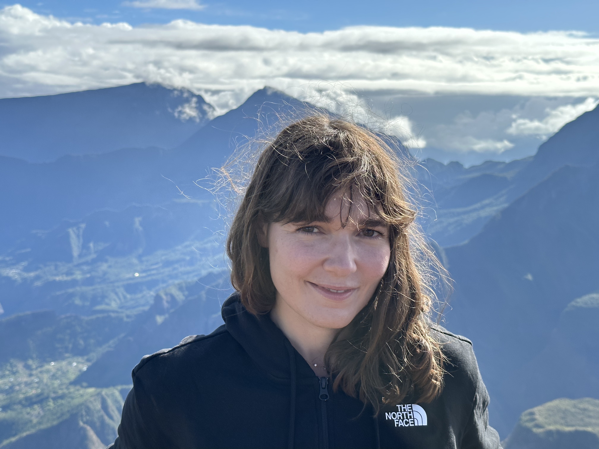

ERC St-G UNREST
Understanding the Seismogenic zone of the Hellenic Subduction.
The UNREST project investigates the mechanical behavior of the plate interface in the Hellenic subduction zone...

Understanding the Seismogenic zone of the Hellenic Subduction.
The UNREST project investigates the mechanical behavior of the plate interface in the Hellenic subduction zone...